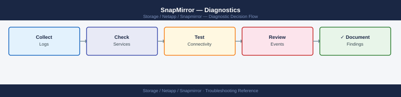

SnapMirror — Diagnostics¶

Before you begin¶
- Access: Cluster admin credentials on both source and destination ONTAP clusters; SSH or NetApp System Manager access
- Gather first: the relationship path (
source-svm:volume→dest-svm:volume), current lag time, and the "Reason" text fromsnapmirror showon the unhealthy relationship - Scope: confirm whether the issue affects a single volume relationship, all relationships on one cluster, or all cross-cluster replication
- SM-BC caution: for SM-BC relationships, do not run
snapmirror breakorsnapmirror resyncwithout confirming the mediator is reachable — automatic failover requires the mediator to be healthy - Logging: run each command and save the output; ONTAP EMS event log is the primary artifact for NetApp TAC cases
Step 1 — Check relationship health and lag¶
# Summary view — all relationships with health and lag
snapmirror show -fields lag-time,healthy,last-transfer-end-timestamp,status
# Columns:
# healthy: true = no errors; false = relationship has an error
# lag-time: time since last successful transfer; for async: should be < schedule interval
# status: Idle | Transferring | Aborting | Quiesced | Broken-off
# Focus on rows with healthy=false first
# Detailed view of a specific relationship
snapmirror show -destination-path <dest-svm>:<dest-vol>
# Key fields:
# Relationship Status: Snapmirrored | Broken-off | Quiesced
# Transferring?: true if a transfer is in progress
# Last Transfer Size: how much data moved in the last transfer
# Unhealthy Reason: exact error text — this is what to search in NetApp KB and EMS
# All destination relationships from this cluster's perspective
snapmirror list-destinations
# Shows: source path, dest path, relationship type, status
# Find all broken-off (activated) relationships
snapmirror show -relationship-status broken-off
# Expected: none in normal operation; present after a DR failover
Source Destination Lag Time Healthy Last Transfer End Timestamp Status
------- ----------- -------- ------- ---------------------------- ------
svm1:vol_data svm2:vol_data_mirror 00:15:32 true 2024-01-15 14:32:18 +00:00 Idle
svm1:vol_logs svm2:vol_logs_mirror 00:08:45 false 2024-01-15 14:28:02 +00:00 Idle
svm3:vol_archive svm4:vol_archive_dr 02:22:10 true 2024-01-15 12:15:55 +00:00 Idle
svm2:vol_critical svm3:vol_critical_bak 00:31:05 false 2024-01-15 14:05:33 +00:00 Transferring
...
Source Destination: svm1:vol_logs svm2:vol_logs_mirror
Relationship Status: Snapmirrored
Transferring?: false
Last Transfer Size: 2.4GB
Unhealthy Reason: Transfer aborted: insufficient space on destination volume
Destination Paths:
svm1:vol_data → svm2:vol_data_mirror (type: DP, status: Snapmirrored)
svm1:vol_logs → svm2:vol_logs_mirror (type: DP, status: Snapmirrored)
svm3:vol_archive → svm4:vol_archive_dr (type: DP, status: Snapmirrored)
Relationship Status: broken-off
(no relationships found)
Common errors
Error: command failed: No such relationship — Verify the destination path format is correct (svm-name:volume-name) and the relationship exists with snapmirror show.
Transfer aborted: insufficient space on destination volume — Increase the destination volume size with volume modify -vserver <dest-svm> -volume <dest-vol> -size +<amount> or enable autogrow.
Transfer failed: source volume is offline — Bring the source volume online with volume online -vserver <src-svm> -volume <src-vol> and resume the relationship with snapmirror resume -destination-path <dest-svm>:<dest-vol>.
Step 2 — Check transfer history¶
# Transfer history for a specific relationship (last 20 transfers)
snapmirror show-history -destination-path <dest-svm>:<dest-vol>
# Shows: start time, end time, bytes transferred, transfer duration, status
# Look for: recent failures, very short durations (abort), increasing transfer size
# Active transfers in progress right now
snapmirror show -fields is-current-op-abort-enabled,transferring | grep -i true
# Abort a stuck transfer (safe — only cancels the current transfer; does not break the relationship)
snapmirror abort -destination-path <dest-svm>:<dest-vol>
# Then manually trigger a new update:
snapmirror update -destination-path <dest-svm>:<dest-vol>
Source Path: cluster1://prod_svm:prod_vol
Destination Path: cluster2://dr_svm:prod_vol
Start Time: 11/15/2024 14:32:18
End Time: 11/15/2024 14:47:52
Bytes Transferred: 847.3GB
Transfer Duration: 915 seconds
Result: Success
Bytes Transferred: 823.1GB
Transfer Duration: 28 seconds
Result: Aborted
Bytes Transferred: 1.2TB
Transfer Duration: 1847 seconds
Result: Success
Is-current-op-abort-enabled Transferring
true true
true true
Operation succeeded: SnapMirror transfer aborted for destination "cluster2://dr_svm:prod_vol".
Operation succeeded: SnapMirror update started for destination "cluster2://dr_svm:prod_vol".
Common errors
Error: command failed: No SnapMirror relationship found for destination path cluster2://dr_svm:prod_vol — Verify the destination SVM and volume names are correct using snapmirror show without filters.
Error: SnapMirror transfer cannot be aborted: transfer is not in progress — Check if the transfer has already completed or failed using snapmirror show-history; only active transfers can be aborted.
Error: This operation is not permitted: SnapMirror relationship is broken — Resynchronize the relationship with snapmirror resync -destination-path <dest-svm>:<dest-vol> before attempting manual updates.
Step 3 — Check intercluster LIFs¶
SnapMirror traffic uses dedicated intercluster logical interfaces. If these are down or misconfigured, all cross-cluster replication fails.
# List all intercluster LIFs on the local cluster
network interface show -role intercluster
# Columns: LIF Name, SVM, Home Node, Home Port, Current Node, Current Port, Status Admin/Oper
# Expected: Status Admin = up, Status Oper = up for all intercluster LIFs
# Test ICMP reachability between intercluster LIFs
network ping -lif <local-intercluster-lif> -destination <remote-intercluster-lif-ip>
# Expected: 0% packet loss; round-trip time < 5ms (LAN) or < 80ms (WAN typical)
# Check intercluster peer relationship
cluster peer show
# Shows: peer cluster name, availability (Available/Partial/Unavailable), ping status
# If status = Unavailable: intercluster LIF connectivity is broken
# Show intercluster peer detail
cluster peer show -instance
# Shows: remote IPs, last heartbeat, authentication status
Vserver LIF Node Port Status
------- --- ---- ---- ------
cluster1 cluster1_icl_1 node-01 e0c up
cluster1 cluster1_icl_2 node-02 e0c up
cluster1 cluster1_icl_3 node-03 e0d up
PING 10.45.12.8 from 10.45.12.5: 56 bytes of data.
64 bytes from 10.45.12.8: icmp_seq=0 tloc=1.234 ms
64 bytes from 10.45.12.8: icmp_seq=1 tloc=1.156 ms
64 bytes from 10.45.12.8: icmp_seq=2 tloc=1.289 ms
3 packets transmitted, 3 packets received, 0% packet loss
Cluster-Name Cluster-UUID Availability Authentication
----------- ------- ----------- ---------------
cluster2-prod 4a1b2c3d-5e6f-7a8b-9c0d-1e2f3a4b5c6d Available ok
Peer Cluster Name: cluster2-prod
Remote Intercluster LIFs: 10.45.12.8, 10.45.12.9
Peer Addresses: 192.168.100.15, 192.168.100.16
Last Heartbeat: 2024-01-15 14:32:18
Authentication Status: ok
Availability: Available
Common errors
Error: command failed: No entry found for intercluster LIFs — Verify intercluster LIFs exist by running network interface show -role intercluster and create them if missing using network interface create -vserver <cluster> -lif <name> -role intercluster -home-node <node> -home-port <port> -address <ip> -netmask <mask>.
100% packet loss — Check firewall rules allow UDP 11104-11105 between clusters, verify network routing with network route show, and confirm intercluster LIF is in "up" status.
Cluster peer show: Availability = Unavailable — Verify both clusters can reach each other's intercluster LIFs using network ping, check DNS resolution, and re-establish the peer relationship with cluster peer create -peer-addrs <remote-ip>.
Step 4 — Check ONTAP EMS for SnapMirror events¶
# Show all SnapMirror-specific EMS events (most specific filter)
event log show -message-name "snapmirror.*" -severity error -time-range <start>..<end>
# Replace <start>..<end> with: "2026-06-15 08:00:00".."2026-06-15 10:00:00"
# Broader search — all errors in the relevant time window
event log show -severity error -time-range <start>..<end>
# Look for: snapmirror, network, disk, aggr messages
# Show EMS messages mentioning a specific volume
event log show -node * | grep -i "<volume-name>"
# Common SnapMirror EMS messages and their meaning:
# snapmirror.src.notSnapshot → source snapshot was deleted before transfer completed
# snapmirror.xfer.write.err → write error on destination volume; check destination aggregate
# snapmirror.dst.noSpace → destination volume or aggregate is full
# netc.conn.refused → intercluster connection refused; LIF or firewall issue
cluster1::> event log show -message-name "snapmirror.*" -severity error -time-range "2026-06-15 08:00:00".."2026-06-15 10:00:00"
Time Node Severity Event
------------------ ---------------- -------- ----------------------------------------
2026-06-15 08:23:14 cluster1-01 ERROR snapmirror.xfer.write.err
2026-06-15 08:47:22 cluster1-02 ERROR snapmirror.dst.noSpace
2026-06-15 09:15:08 cluster1-01 ERROR snapmirror.src.notSnapshot
2026-06-15 09:52:31 cluster1-02 ERROR snapmirror.xfer.write.err
cluster1::> event log show -severity error -time-range "2026-06-15 08:00:00".."2026-06-15 10:00:00"
Time Node Severity Event
------------------ ---------------- -------- ----------------------------------------
2026-06-15 08:12:45 cluster1-01 ERROR netc.conn.refused
2026-06-15 08:23:14 cluster1-01 ERROR snapmirror.xfer.write.err
2026-06-15 08:47:22 cluster1-02 ERROR snapmirror.dst.noSpace
2026-06-15 09:15:08 cluster1-01 ERROR snapmirror.src.notSnapshot
2026-06-15 09:52:31 cluster1-02 ERROR snapmirror.xfer.write.err
...
cluster1::> event log show -node * | grep -i "vol_data_prod"
2026-06-15 08:23:14 cluster1-01 ERROR snapmirror.xfer.write.err: SnapMirror transfer write error on destination volume vol_data_prod in vserver vs_prod
2026-06-15 09:15:08 cluster1-01 ERROR snapmirror.src.notSnapshot: Source snapshot deleted before SnapMirror transfer completed for vol_data_prod
Common errors
Error: invalid value for "-time-range" option — Ensure the date format matches "YYYY-MM-DD HH:MM:SS" and use two dots (..) to separate start and end times.
Error: unknown event message name "snapmirror.*" — Use the exact message name without wildcards in the -message-name parameter, or omit the filter to search all events and pipe to grep instead.
Step 5 — SM-BC specific diagnostics¶
For SnapMirror Business Continuity (SM-BC / SnapMirror Active Sync) issues:
# Check mediator connectivity
snapmirror mediator show
# Shows: mediator IP, mediator version, peer cluster, connectivity (Reachable/Unreachable)
# Expected: Connected = true, mediator-state = success
# List all SM-BC consistency groups
consistency-group show
# Shows: CG name, source cluster, dest cluster, status, RPO, state
# Check SM-BC relationship state
snapmirror show -policy AutomatedFailOver
# Status should be: Insync (healthy) or OutOfSync (problem)
# If mediator is unreachable — SM-BC falls back to standard sync (no automatic failover)
# Test mediator manually from Linux CLI on mediator VM:
curl https://<mediator-ip>/api/v1/heartbeat
# Expected: HTTP 200 with cluster peer info
# Trigger SM-BC mediator re-connection (if mediator was temporarily unavailable)
snapmirror mediator remove -peer-cluster <peer>
snapmirror mediator add -peer-cluster <peer> -username <user> -mediator-address <ip>
Mediator Address: 192.168.100.45
Mediator Version: 1.3.2
Peer Cluster: cluster2-01
Connectivity: Reachable
Connected: true
Mediator-state: success
CG Name Source Cluster Dest Cluster Status RPO
cg-prod-db-01 cluster1-01 cluster2-01 InSync 0s
cg-prod-app-02 cluster1-01 cluster2-01 InSync 0s
cg-dr-backup-03 cluster1-01 cluster2-01 OutOfSync 45s
Source Destination Policy SnapMirror State Healthy
cluster1-01: cg-prod-db-01 cluster2-01: cg-prod-db-01 AutomatedFailOver Insync true
cluster1-01: cg-prod-app-02 cluster2-01: cg-prod-app-02 AutomatedFailOver Insync true
% Total % Received % Xferd Average Speed Time Current
Dload Upload Total Spent Left Speed
100 284 100 284 0 0 1205 0 --:--:-- -- 0:00:00 --:--:-- 0:00:00
{"cluster_peer_uuid":"a1b2c3d4-e5f6-7890-abcd-ef1234567890","mediator_version":"1.3.2"}
Mediator removed for peer cluster cluster2-01.
Mediator added for peer cluster cluster2-01 with address 192.168.100.45.
Common errors
Error: Mediator is unreachable. Failover capability is disabled. — Verify mediator VM is running and network connectivity exists from both clusters to the mediator IP on port 443.
Error: curl: (60) SSL certificate problem: self signed certificate — Add the -k flag to curl (curl -k https://<mediator-ip>/api/v1/heartbeat) or import the mediator's CA certificate into the cluster's certificate store.
Error: Mediator add failed: Authentication failed for peer cluster — Confirm the mediator username and password are correct and the mediator has been initialized with mediator setup on the mediator VM.
Step 6 — Collect AutoSupport and EMS for NetApp SR¶
# Invoke AutoSupport for the affected node (preferred artifact for NetApp TAC)
system node autosupport invoke -node * -type all -message "SnapMirror investigation case #<case-id>"
# Export EMS log to a file
event log show -severity error -time-range <start>..<end> > /tmp/ems-error-$(date +%F).txt
# Collect all-in-one SnapMirror diagnostic snapshot
{
echo "=== snapmirror show summary ==="
snapmirror show -fields lag-time,healthy,status
echo "=== cluster peer show ==="
cluster peer show
echo "=== network interface show intercluster ==="
network interface show -role intercluster
echo "=== snapmirror mediator show (if SM-BC) ==="
snapmirror mediator show 2>/dev/null || echo "No mediator configured"
echo "=== EMS errors (last 2 hours) ==="
event log show -severity error -time-range "-2h".."now"
} 2>&1 | tee /tmp/snapmirror-diag-$(date +%F-%H%M).txt
Invoking AutoSupport on all nodes...
AutoSupport successfully invoked on node cluster1-01
AutoSupport successfully invoked on node cluster1-02
=== snapmirror show summary ===
Source Destination Lag-time Healthy Status
cluster1://svm1/vol_data cluster2://svm1/vol_data 00:15:32 true SnapMirrored
cluster1://svm1/vol_logs cluster2://svm1/vol_logs 00:22:18 false Transferring
cluster1://svm2/vol_archive cluster2://svm2/vol_archive 02:45:00 false Idle
=== cluster peer show ===
Peer Cluster Name Availability Authentication
cluster2 Available ok
=== network interface show intercluster ===
Vserver Name IP Address Status
cluster1 intercluster_1 192.168.100.10 up
cluster1 intercluster_2 192.168.100.11 up
=== snapmirror mediator show (if SM-BC) ===
No mediator configured
=== EMS errors (last 2 hours) ===
Time Node Severity Event
2024-01-15 14:32:18 cluster1-01 ERROR SnapMirror transfer failed: Network timeout
2024-01-15 13:47:22 cluster1-02 ERROR Intercluster LIF down: cluster2 unreachable
2024-01-15 13:15:09 cluster1-01 ERROR Snapmirror lag threshold exceeded on vol_logs
Diagnostic output saved to /tmp/snapmirror-diag-2024-01-15-1445.txt
Common errors
Error: command not found: snapmirror — Verify you are running commands on a NetApp ONTAP cluster (not a Linux host) and have appropriate cluster admin privileges.
Error: No cluster peer relationship found — Establish cluster peering first using cluster peer create before attempting SnapMirror operations.
Error: event log show: invalid time-range format — Use valid time-range syntax like "-2h".."now" or absolute timestamps in YYYY-MM-DD HH:MM:SS format.
Log locations¶
| Component | Command / Location | What to look for |
|---|---|---|
| ONTAP EMS | event log show -message-name "snapmirror.*" |
Transfer errors, network failures |
| Transfer history | snapmirror show-history -destination-path <path> |
Failed transfers, duration trends |
| Cluster peer | cluster peer show |
Availability status, authentication |
| AutoSupport | system node autosupport invoke |
Full system state snapshot for NetApp TAC |
See also¶
Verify resolution¶
snapmirror show -fields healthyshowshealthy=truefor all affected relationshipssnapmirror show -fields lag-timeshows lag below 1× the schedule interval for async relationshipscluster peer showshowsAvailablefor all peer cluster relationships- For SM-BC:
snapmirror mediator showshowsConnected = trueand mediator-state = success - Trigger a manual
snapmirror updateand confirm it completes withstatus=Idleand a new transfer end time